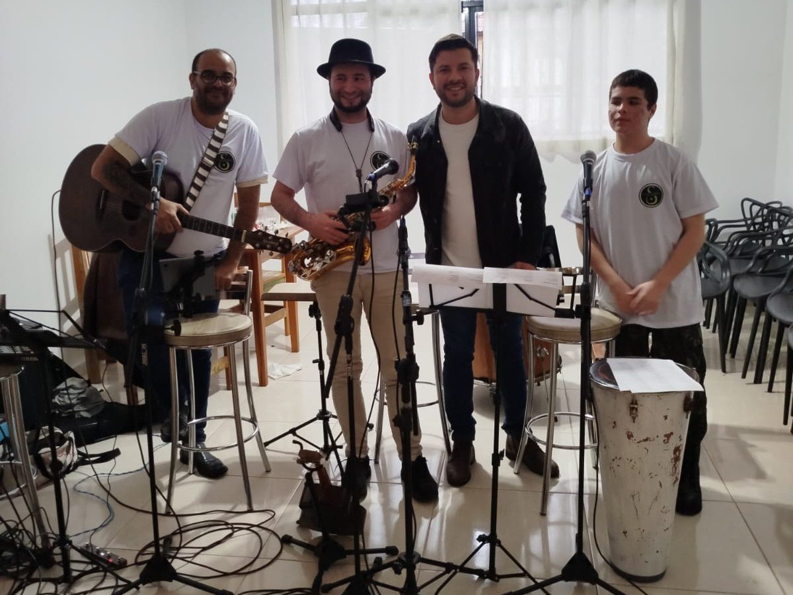
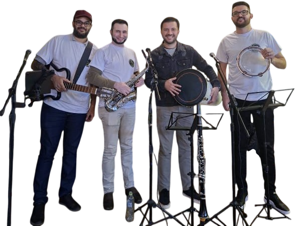

Samba de raiz
Os grandes clássicos que todo mundo canta junto.
Portfólio artístico 2026
Samba de raiz e pagode para shows, eventos e marcas que querem a festa cheia.
Quem somos
O Grupo S do Samba entrega uma experiência musical completa, dinâmica e envolvente, e valoriza a sintonia entre os integrantes e a força do samba.
Somos um grupo de amigos de longa data que decidiu levar alegria para mais pessoas. Em cada evento, levamos repertório afinado, presença de palco e interação constante com o público.

Integrantes

Repertório
Os grandes clássicos que todo mundo canta junto.
Os pagodes aclamados que marcaram gerações.
Os sucessos de agora, com a assinatura do grupo.
Sambas-enredo marcantes para levantar a pista.
Releituras modernas que conversam com públicos de todas as idades, e um roteiro que se adapta ao clima de cada evento.
Onde tocamos
Formação de palco
| Seção | Instrumentos | O que entrega |
|---|
Estrutura do show
2h30
de show contínuo, com roteiro montado para o seu público
500
pessoas: até esse porte com som e luz próprios, do bar ao salão
NF
emitida (MEI) e contrato formal de prestação de serviço
Equipe de apoio com técnico de som e roadies para montagem, passagem de som e suporte durante todo o evento.
Para patrocinadores
O S do Samba reúne público que canta junto, dança e compartilha. Associar a sua marca ao grupo é estar presente nos melhores momentos de quem está na festa.
2h30
de show contínuo, com roteiro para o seu público
100
pessoas, em média, por show
803
seguidores no Instagram @s_do_samba
Amorin Alimentos e Produtos Coloniais (lanchonete), Rei do Espetinho (lanchonete e petiscaria), casamentos, aniversários e outros eventos particulares, entre outros lugares.
Por que o S do Samba
Amigos de longa data, entrosados no palco e com estrada para animar qualquer tipo de evento.
Do samba tradicional ao pagode retrô e atual, no clima que o seu público pede.
Presença de palco contagiante, interação constante e afinação impecável.
Pontualidade, alinhamento prévio com o contratante e cuidado em cada detalhe.
Contato e orçamentos
Nota fiscal (MEI) e contrato formal em todas as apresentações.